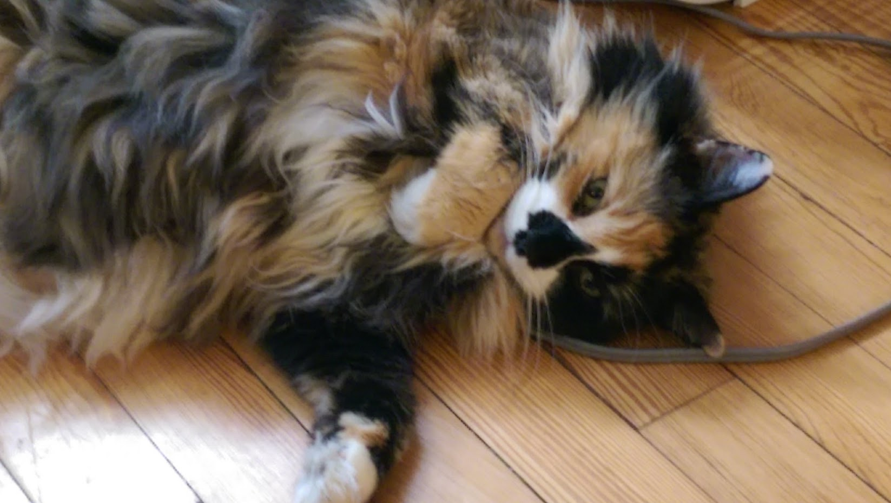

About Me + Resume
Let's talk about how I can help you! Take a look at my resume (PDF) and skills - and let's chat.
I have skills:
Software
- Sketch
- Google Analytics
- Hotjar
- Visio
- Invision
- Tableau
- Proto.io
- Axure RP
- Chalkmark
- Treejack
Usability Interview & Testing Skills
- Card Sorting
- Moderated Usability Tests
- Unmoderated Usability Tests
- Directed User Interviews
- Ethnographic User Interviews
Testing Analysis
- First Click Tests
- Eye Tracking Usability Tests
Languages
- HTML
- CSS
- SQL
- Python
- git-flow
Your Project?
In case you'd like to email me to chat about a project you'd like help in designing or a website you'd like to make more user-friendly, I'm available for contract work as well. Please send an email to hansenmk at gmail dot com with your project timeline and some introductory details on the problem that you're trying to solve. - I return email within 48 hours and am happy to set up a phone call or skype session to discuss your project.
Other Projects?
I have some other projects, in both the mobile app and web space, that I'd be happy to share with you if you have additiona questions about my process, or would like further examples of my work. Please send me an email and I'd be happy to send them to you.
More About Me?
Outside of my love of organization, I...
- spin fiber into yarn with my spinning wheel,
- knit with whatever sticks are available,
- weave yarn into cloth,
- am a dedicated bus / bike commuter,
- enjoy the meditative practice of drawing zentangles,
- am learning Fusion360 for building things with my Glowforge,
- make himmeli-inspired cat toys for Lily my long haired Norwegian Forest/Maine Coon Cat of Tortico coloring (honestly though, I belong to her), and
- am a firm believer of the Oxford comma.
You made it to the end of my website, have a cat picture. ❤
